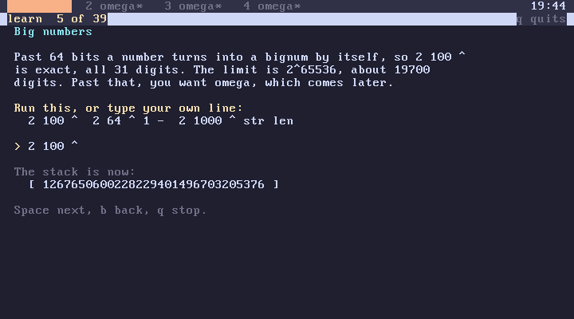
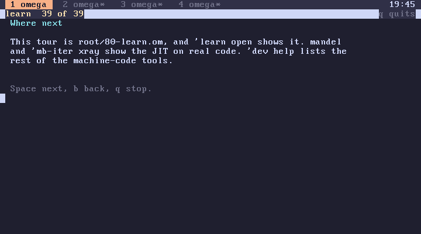

subverge
subvergelearn
learn is the tutorial built into Subverge. It teaches omega from the stack upwards, one screen per lesson, and each lesson gives you a line to run so you see the result straight away. It assumes you can already program in some language, and it moves quickly.
Starting
learn starts at the first lesson
14 lesson starts at lesson 15
Lessons are numbered from 1 on screen, and lesson counts from 0 like the rest of omega, so 14 lesson opens the lesson the header calls learn 15.

How a lesson works
Each lesson shows a title, a short explanation and a suggested line under Run this, or type your own line:. The prompt that follows works like the normal prompt, without history.
- Press Enter on an empty line to skip the exercise.
- Type the suggested line, or anything else, and press Enter to run it.
The lesson then shows the stack after your line. Each lesson starts from an empty stack. If your line fails, the error is printed and the stack is put back as it was before the line, so a mistake never leaves the lesson in a strange state.
After the exercise, any key moves to the next lesson, b goes back one, and q, Escape or Ctrl-C leaves.
Note: Ctrl-C at the exercise prompt itself cancels the whole tutorial with the error
cancelled. Since the tutorial is one line, that also undoes every definition made during it. Leave withqafter an exercise instead.
What it keeps
When you leave, learn clears the screen and puts back the stack you had before starting. Definitions you made during the lessons are kept, so a word written in the lesson on definitions can be used afterwards.
The whole tutorial runs as a single line, so all the definitions you made in it arrive together as one change to your world, and one back removes all of them.
Lessons
| Lesson | Lesson | ||
|---|---|---|---|
| 1 | Operand stack | 25 | Drawing |
| 2 | Postfix evaluation | 26 | Themes |
| 3 | Stack words | 27 | Ordinals |
| 4 | Integers | 28 | Cardinals |
| 5 | Big numbers | 29 | Counting past infinity |
| 6 | Truth | 30 | Same size |
| 7 | Strings | 31 | The hotel |
| 8 | Quotes | 32 | Fractions |
| 9 | Definitions | 33 | Too many reals |
| 10 | Reflection | 34 | Alephs |
| 11 | Locals | 35 | Hailstones |
| 12 | Dynamic scope | 36 | Bit parity |
| 13 | Conditionals | 37 | Machine access |
| 14 | Loops | 38 | JIT |
| 15 | Recursion | 39 | Programs |
| 16 | Tracing | 40 | Small tools |
| 17 | Lists | 41 | Editing a word |
| 18 | Transactions | 42 | Writing a program |
| 19 | Undo | 43 | Registering it in apps |
| 20 | Catching errors | 44 | Checking the entry |
| 21 | Tabs | 45 | Root units |
| 22 | Help | 46 | Persistence |
| 23 | Time | 47 | Where next |
| 24 | Keys |
The first half is the language: the stack, values, definitions, locals and their dynamic scope, control flow and lists. The middle covers what makes Subverge different, namely transactions, back, try, tabs, themes, and the ordinals and cardinals. The last part walks through writing a small program, adding it to apps and putting it in a root unit so it is saved.

Changing the lessons
The tutorial is ordinary omega in the learn unit of root:
'learn open
The lessons are a list called lessons. Each entry is a list of three strings: the title, the text, and the suggested line, which can be empty for a lesson without an exercise. Lines of text start with two spaces and are separated with \n. Adding an entry adds a lesson, and the change takes effect as soon as the unit builds.
The runner, lesson, shows how the exercises are made safe. It saves the stack with depth list, runs your line with eval inside try, and spreads the saved stack back if try leaves 0. The same technique works in any program that runs code typed by the user (catching).